Diseño Digital
En los sistemas digitales\, la información que se procesa\, por lo general\, está presente en formato binario. Las cantidades binarias pueden representarse mediante cualquier dispositivo que solo tenga dos estados de operación o condiciones posibles .
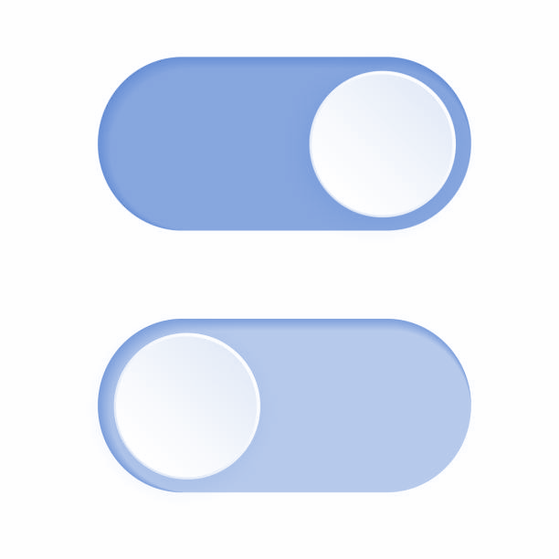
Un interruptor solo tiene dos estados: abierto o cerrado . De manera arbitraria podemos permitir que un interruptor abierto represente el 0 binario y que un interruptor cerrado represente el 1 binario.
Con esta asignación podemos ahora representar cualquier número binario. Se muestra un número en código binario para un dispositivo de apertura de puertas de garaje. Los pequeños interruptores están ajustados para formar el número binario 1000101010. La puerta se abrirá solo si coinciden los patrones de bits en el receptor y en el transmisor.
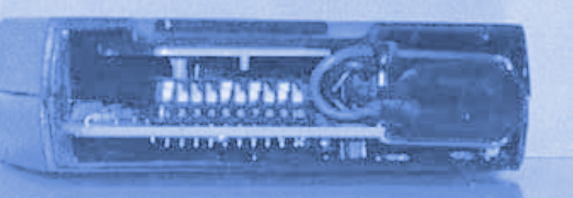
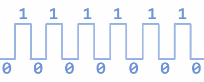
Se almacenan números binarios en un CD. La superficie interior \(debajo de una capa de plástico transparente\) se recubre con una capa de aluminio con alta capacidad de reflexión. Se queman hoyos a través de esta cubierta reflectora para formar “pozos” que no reflejan la luz de la misma manera que las áreas no quemadas. Estas áreas en las que se queman los pozos se consideran como “1s” y las áreas reflectoras son “0s”.
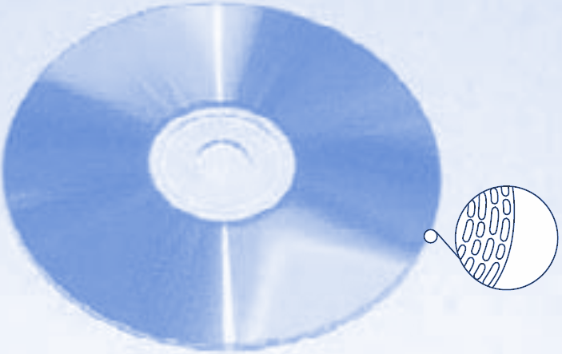
Existen muchos otros dispositivos que sólo tienen dos estados de operación\, o que pueden operarse en dos condiciones extremas. Entre ellos están: la bombilla de luz \(brillante u oscura\)\, el diodo \(conductor o no conductor\)\, el electroimán \(energizado o desenergizado\)\, el transistor \(en corte o saturado\)\, la fotocelda \(iluminada u oscura\)\, el termostato \(abierto o cerrado\)\, el embrague mecánico \(enganchado o desenganchado\)\, y un área en un disco magnético \(magnetizada o desmagnetizada\).
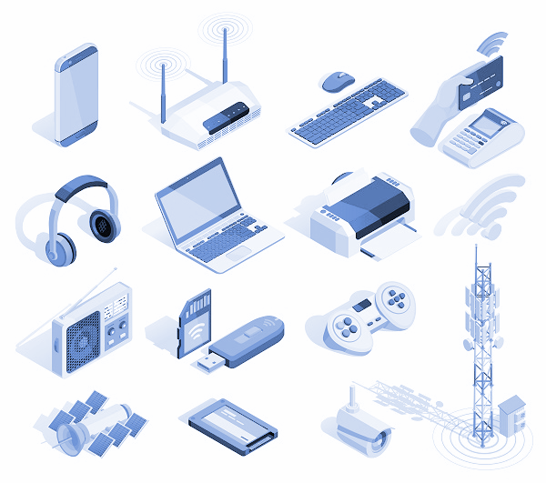
En los sistemas digitales electrónicos la información binaria se representa mediante voltajes \(o corrientes\) que están presentes en las entradas y salidas de los diversos circuitos. Por lo general\, el 0 y el 1 binarios se representan mediante dos niveles de voltaje nominal. Por ejemplo\, cero Volts \(0 V\) podrían representar el 0 binario y 5 V podrían representar el 1 binario.

En realidad\, y debido a las variaciones en los circuitos\, el 0 y el 1 se representan mediante intervalos de voltaje. Cualquier voltaje entre 0 y 0.8 V representa un 0 y cualquier voltaje entre 2 y 5 V representa un 1. Por lo general\, todas las señales de entrada y salida se encuentran dentro de alguno de estos intervalos\, excepto durante las transiciones de un nivel a otro.
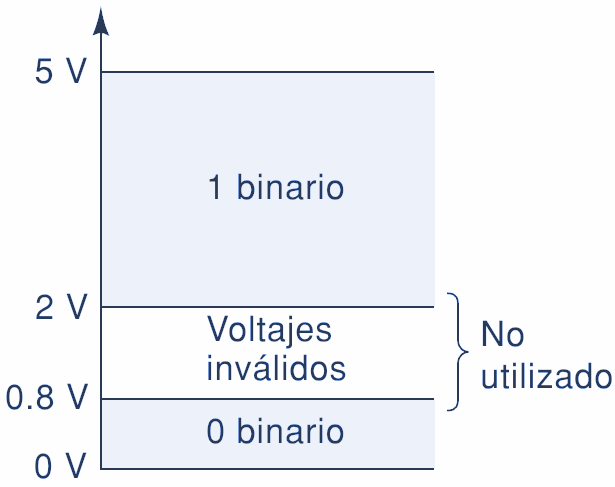
Podemos notar otra diferencia importante entre los sistemas digitales y los analógicos. En los sistemas digitales\, el valor exacto de un voltaje no es importante; por ejemplo\, para las asignaciones de un voltaje de 3.6 V significa lo mismo que un voltaje de 4.3 V. En los sistemas analógicos el valor exacto de un voltaje es importante. Por ejemplo\, si el voltaje analógico es proporcional a la temperatura medida por un transductor\, 3.6 V representaría una temperatura distinta que 4.3 V.

En otras palabras\, la magnitud del voltaje lleva información importante. Dicha característica significa que\, por lo general\, es más difícil diseñar circuitos analógicos precisos que circuitos digitales\, debido a la manera en la que se ven afectados los valores exactos de voltaje por las variaciones en los valores de los componentes\, la temperatura y el ruido \(fluctuaciones aleatorias de voltaje\).
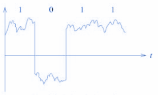
Se muestra una señal digital común y la forma en que esta varía a través del tiempo. En realidad es un gráfico de voltaje contra tiempo \(t\) y se le conoce como diagrama de tiempos . La escala de tiempo horizontal está graduada en intervalos regulares que comienzan desde t 0 y avanzan hasta t 1 \, t 2 y así sucesivamente.
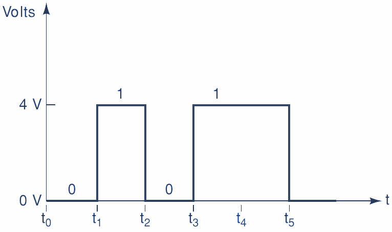
Para el ejemplo del diagrama de tiempos que se muestra aquí\, la señal empieza en 0 V \(un 0 binario\) en el tiempo t 0 y permanece ahí hasta el tiempo t 1 . En t 1 la señal realiza una transición \(salto\) hasta 4 V \(un 1 binario\). En t 2 regresa a 0 V. En t 3 _ y t_ 5 ocurren transiciones similares. Observe que la señal no cambia en t 4 \, sino que permanece en 4 V desde t 3 hasta t 5 .

Circuitos Digitales
Los circuitos digitales están diseñados para producir voltajes de salida que se encuentran dentro de los intervalos de voltaje prescritos para 0 y 1. De igual forma\, los circuitos digitales están diseñados para responder en forma predecible a los voltajes de entrada que se encuentran dentro de los intervalos definidos de 0 y 1.
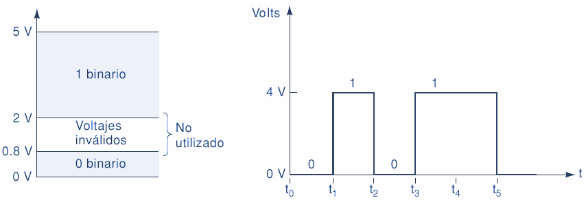
Esto significa que un circuito digital responderá de igual forma a todos los voltajes de entrada que se encuentren dentro de los valores permitidos para 0; de manera similar\, no habrá distinción entre los voltajes de entrada que se encuentren dentro del intervalo permitido para 1.
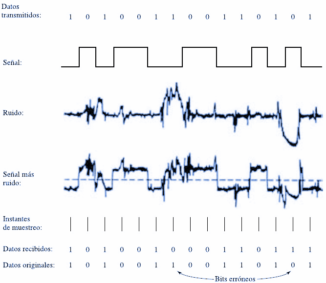
Se representa un circuito digital típico con una entrada vi y una salida vo . La salida se muestra para dos formas de onda de señal de entrada distintas. Observe que vo es igual para ambos casos\, pues aunque las dos formas de onda de entrada difieren en sus niveles exactos de voltaje\, se encuentran en los mismos niveles binarios.
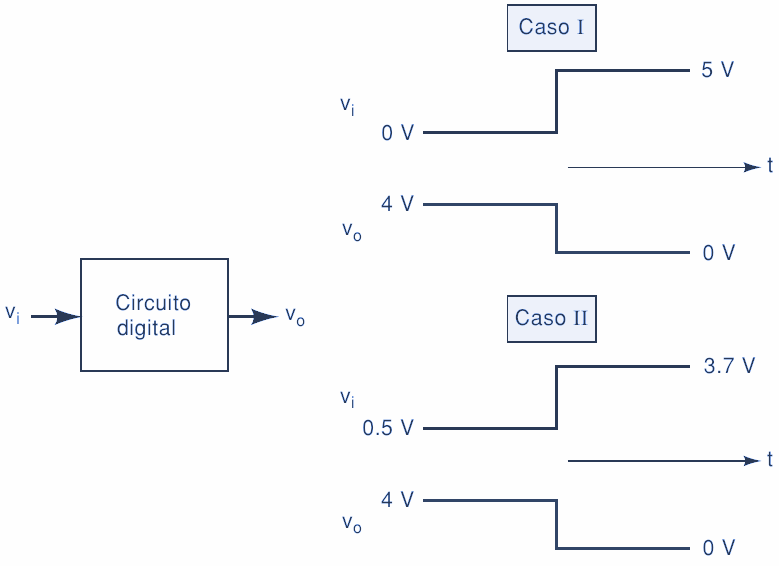

Dígitos binarios
Cada uno de los dos dígitos del sistema binario \, 1 y 0\, se denomina bit \, que es la contracción de las palabras binary digit \( _dígito binario_ \). En los circuitos digitales se emplean dos niveles de tensión diferentes para representar los dos bits.
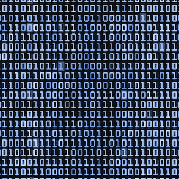
Por lo general\, el 1 se representa mediante el nivel de tensión más elevado\, que se denomina nivel ALTO \(HIGH\) y 0 se representa mediante el nivel de tensión más bajo \, que se denomina nivel BAJO \(LOW\) . Este convenio recibe el nombre de _ _lógica positiva .
ALTO \(HIGH\) = 1
BAJO \(LOW\) = 0
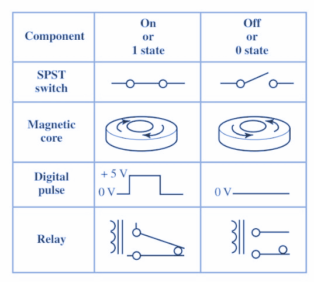
Un sistema en el que un 1 se representa por un nivel BAJO y un 0 mediante un nivel ALTO se dice que emplea lógica negativa .
Los grupos de bits \(combinaciones de 1s y 0s\)\, llamados códigos\, se utilizan para representar números\, letras\, símbolos\, instrucciones y cualquier otra cosa que se requiera en una determinada aplicación.
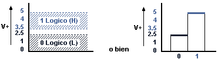
Niveles lógicos
Las tensiones empleadas para representar un 1 y un 0 se denominan niveles lógicos . En el caso ideal\, un nivel de tensión representa un nivel ALTO y otro nivel de tensión representa un nivel BAJO.
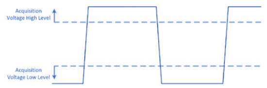
Sin embargo\, en un circuito digital real\, un nivel ALTO puede ser cualquier tensión entre un valor mínimo y un valor máximo especificados. Del mismo modo\, un nivel BAJO puede ser cualquier tensión comprendida entre un mínimo y máximo especificados. No puede existir solapamiento entre el rango aceptado de niveles ALTO y el rango aceptado de niveles BAJO.
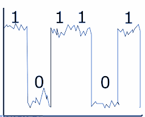

Se ilustra el rango general de los niveles BAJO y ALTO aceptables para un circuito digital. La variable V H\(máx\) representa el valor máximo de tensión para el nivel ALTO y V H\(mín\) representa el valor de tensión mínimo para el nivel ALTO. El valor máximo de tensión para el nivel BAJO se representa mediante V L\(máx\) y el valor mínimo de tensión para el nivel BAJO mediante V L\(mín\) .
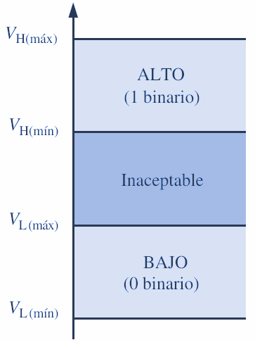
Los valores de tensión comprendidos entre V L\(máx\) _ y V_ H\(mín\) no son aceptables para un funcionamiento correcto. Una tensión en el rango no permitido puede ser interpretada por un determinado circuito tanto como un nivel ALTO cuanto como un nivel BAJO\, por lo que no puede tomarse como un valor aceptable.
Por ejemplo\, los valores para el nivel ALTO en un determinado tipo de circuito digital denominado CMOS pueden variar en el rango de 2 V a 3\,3 V y los valores para el nivel BAJO en el rango de 0 V a 0\,8 V. De esta manera\, si por ejemplo se aplica una tensión de 2\,5 V\, el circuito lo aceptará como un nivel ALTO\, es decir\, un 1 binario. Si se aplica una tensión de 0\,5 V\, el circuito lo aceptará como un nivel BAJO\, es decir\, un 0 binario. En este tipo de circuito\, las tensiones comprendidas entre 0\,8 V y 2 V no son aceptables.
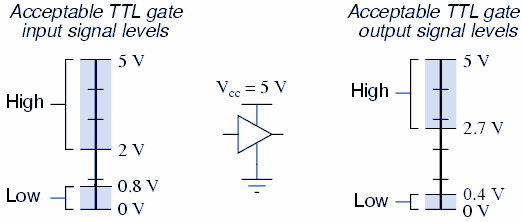
Circuitos lógicos
La forma en que un circuito digital responde a una entrada se conoce como lógica del circuito . Cada tipo de circuito digital obedece un cierto conjunto de reglas lógicas. Por esta razón a los circuitos digitales se les conoce también como circuitos lógicos.
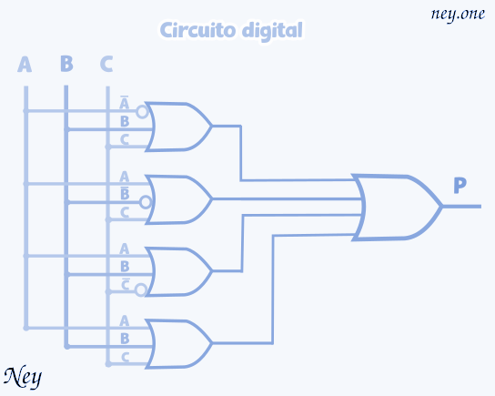
Circuitos digitales integrados
Casi todos los circuitos digitales que se utilizan en los sistemas digitales modernos son circuitos integrados \(CI\). La amplia variedad de circuitos integrados lógicos disponibles\, ha hecho posible la construcción de sistemas digitales complejos que son más pequeños y confiables que sus contrapartes fabricados con componentes discretos.
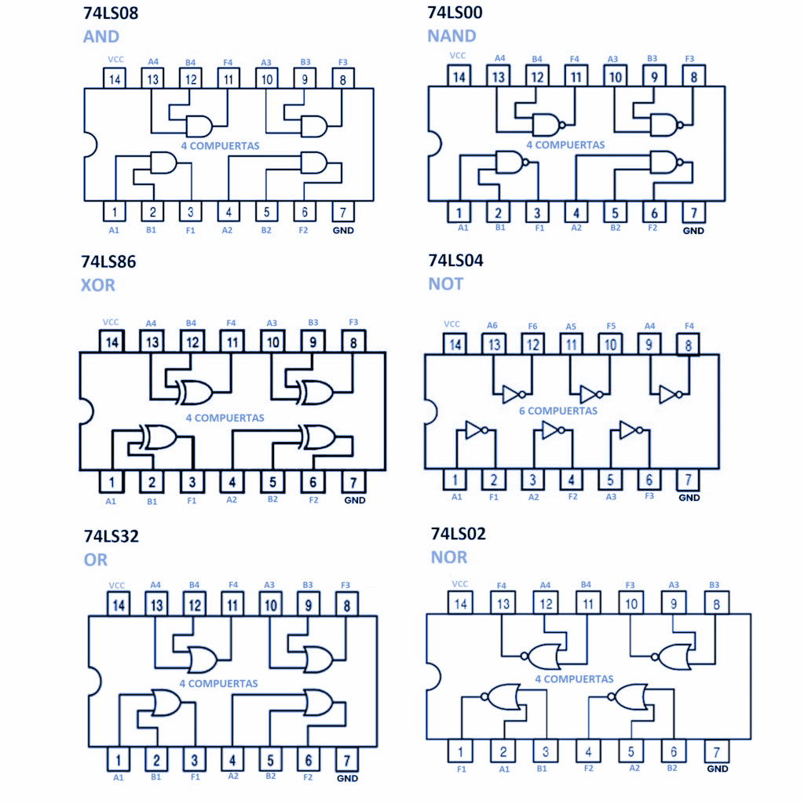
Existen varias tecnologías de fabricación de circuitos integrados utilizadas para producir circuitos integrados digitales\, de las cuales las más comunes son CMOS\, TTL\, NMOS y ECL. Cada una difiere en cuanto al tipo de circuito utilizado para proporcionar la operación lógica deseada.
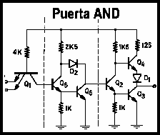
Por ejemplo\, TTL \(lógica de transistor\-transistor\) utiliza el transistor bipolar como el elemento principal en el circuito\, mientras que CMOS \(semiconductor de metal óxido complementario\) utiliza el MOSFET en modo mejorado como el elemento principal del circuito. Veremos sus características\, ventajas y desventajas a medida que vayamos dominando los tipos básicos de circuitos lógicos.
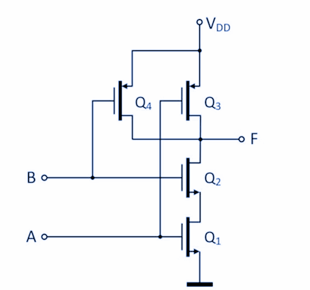
Formas de onda digitales
Las formas de onda digitales consisten en niveles de tensión que varían entre los estados o niveles ALTO y BAJO. Se muestra que un impulso positivo se genera cuando la tensión \(o la intensidad\) pasa de su nivel normalmente BAJO hasta su nivel ALTO y luego vuelve otra vez a su nivel BAJO.

El impulso negativo se genera cuando la tensión pasa de su nivel normalmente ALTO a su nivel BAJO y vuelve a su nivel ALTO. Una señal digital está formada por una serie de impulsos.

El impulso . Un impulso tiene dos flancos: un flanco anterior \(__ _flanco de subida_ __\) que se produce en el instante t 0 y un flanco posterior \(flanco de bajada\) que se produce en el instante posterior t 1 .
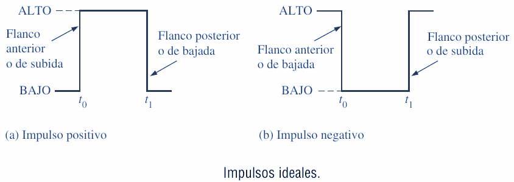
Para un impulso positivo\, el flanco anterior es un flanco de subida y el flanco posterior es de bajada. Los impulsos mostrados son ideales porque se supone que los flancos de subida y de bajada ocurren en un tiempo cero \(instantáneamente\). En la práctica\, estas transiciones no suceden de forma instantánea\, aunque para la mayoría de las situaciones digitales podemos suponer que son impulsos ideales.

Se muestra un impulso real \(no ideal\). En la práctica\, todos los impulsos presentan alguna o todas de las características siguientes. En ocasiones\, se producen picos de tensión y rizado debidos a los efectos capacitivos e inductivos parásitos. La caída puede ser provocada por las capacidades parásitas y la resistencia del circuito que forman un circuito RC con una constante de tiempo baja.


El tiempo requerido para que un impulso pase desde su nivel BAJO hasta su nivel ALTO se denomina tiempo de subida \( _t_ _r_ \)\, y el tiempo requerido para la transición del nivel ALTO al nivel BAJO se denomina tiempo de bajada \( _t_ _f_ \).
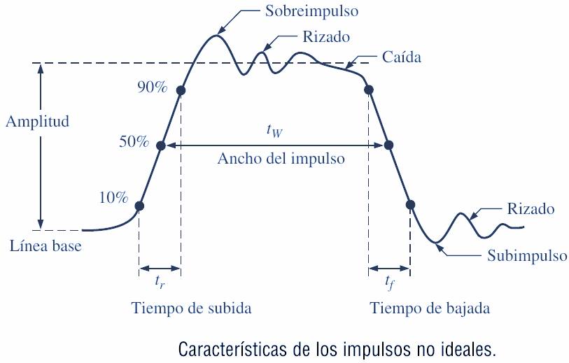
En la práctica\, el tiempo de subida se mide como el tiempo que tarda en pasar del 10% \(altura respecto de la línea\) al 90% de la amplitud del impulso y el tiempo de bajada se mide como el tiempo que tarda en pasar del 90% al 10% de la amplitud del impulso.

La razón de que el 10% inferior y el 10% superior no se incluyan en los tiempos de subida y de bajada se debe a la no linealidad de la señal en esas áreas. El ancho del impulso \( _t_ _W_ \) es una medida de la duración del impulso y\, a menudo\, se define como el intervalo de tiempo que transcurre entre los puntos en que la amplitud es del 50% en los flancos de subida y de bajada\, como se indica.

Características de la forma de onda
La mayoría de las formas de onda que se pueden encontrar en los sistemas digitales están formadas por series de impulsos\, algunas veces denominados también trenes de impulsos\, y pueden clasificarse en periódicas y no periódicas.

Un tren de impulsos periódico es aquel que se repite a intervalos de tiempo fijos; este intervalo de tiempo fijo se denomina período \(T\) . La frecuencia \(f\) es la velocidad a la que se repite y se mide en hercios \(Hz\).
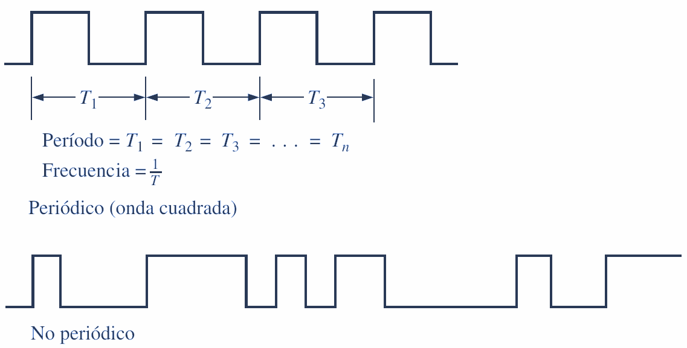
Por supuesto\, un tren de impulsos no periódico no se repite a intervalos de tiempo fijos y puede estar formado por impulsos de distintos anchos y/o impulsos que tienen intervalos distintos de tiempo entre los pulsos.

La frecuencia \(f\) de un tren de pulsos \(digital\) es el inverso del período. La relación entre la frecuencia y el período se expresa como sigue:
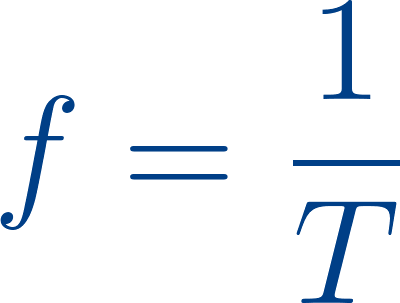
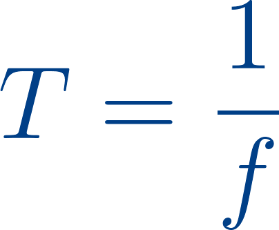
Una característica importante de una señal digital periódica es su ciclo de trabajo \, que es el cociente entre el ancho del impulso \( _t_ _W_ \) y el período \( _T_ \) y puede expresarse como un porcentaje.
Diagramas de tiempos
Un diagrama de tiempos o cronograma es una gráfica de señales digitales que muestra la relación temporal real entre dos o más señales y cómo varía cada señal respecto a las demás.
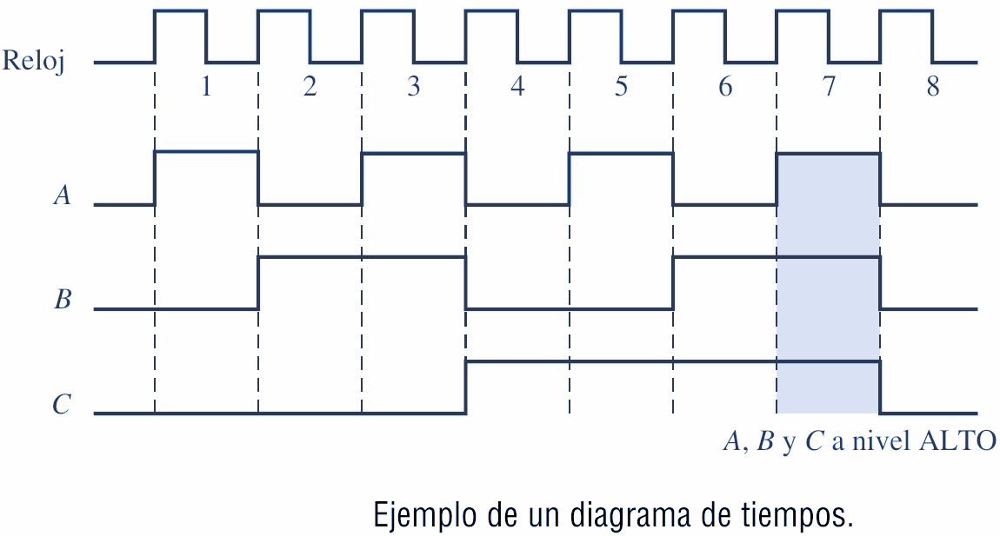
Al examinar un diagrama de tiempos\, es posible determinar los estados \(ALTO o BAJO\) de todas las formas de onda en cualquier punto de tiempo especificado y el instante exacto en el que una forma de onda cambia de estado respecto a las restantes.

A partir de este diagrama de tiempos podemos ver\, por ejemplo\, que las tres formas de onda A\, B y C están a nivel ALTO solo durante el séptimo ciclo de reloj y las tres cambian de nuevo a nivel BAJO cuando termina dicho ciclo \(área sombreada\).

BYTE, NIBBLE Y PALABRA
Bytes
La mayoría de las microcomputadoras maneja y almacena datos binarios e información en grupos de ocho bits\, por lo que una cadena de ocho bits tiene un nombre especial: byte. Un byte consiste de ocho bits y puede representar cualquier tipo de datos o de información. Los siguientes ejemplos ilustrarán este punto.
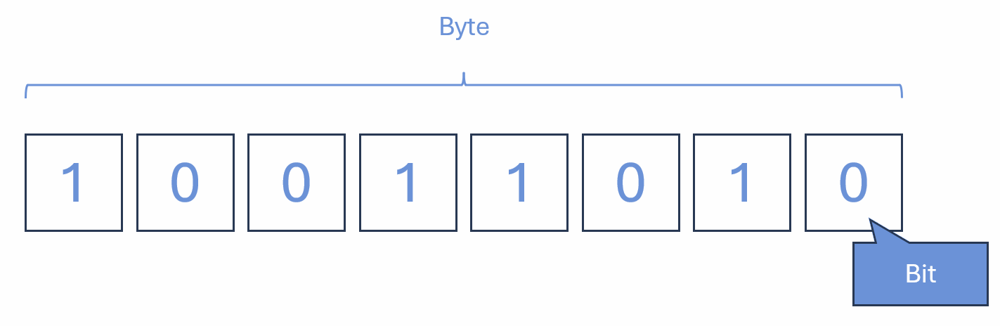
Nibbles
A menudo los números binarios se descomponen en grupos de cuatro bits\, como con códigos BCD y las conversiones a números hexadecimales. En los primeros días de los sistemas digitales surgió un término para describir un grupo de cuatro bits. Como abarca la mitad de un byte \, se le denominó nibble. Los siguientes ejemplos ilustran el uso de este término.
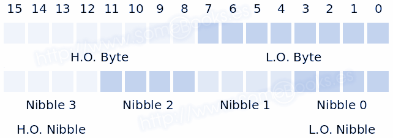
Palabras
Los términos bit\, nibble y byte representan un número fijo de dígitos binarios. A medida que los sistemas han ido creciendo a lo largo de los años\, también ha crecido su capacidad \(¿apetito?\) de manejar datos binarios. Una palabra es un grupo de bits que representa una cierta unidad de información.

El tamaño de la palabra depende del tamaño de la ruta de datos en el sistema que utiliza la información. El tamaño de palabra puede definirse como el número de bits en la palabra binaria con el que opera un sistema digital.
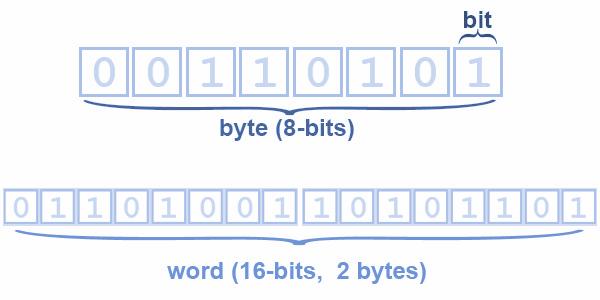
Por ejemplo\, tal vez la computadora en su horno de microondas solo pueda manejar un byte a la vez. Tiene un tamaño de palabra de ocho bits. Por otro lado\, la computadora personal en su escritorio puede manejar ocho bytes a la vez\, por lo que tiene un tamaño de palabra de 64 bits.

Código ASCII
El código alfanumérico más utilizado es el Código estándar estadounidense para el intercambio de información \(ASCII\). Este código es de siete bits\, por lo cual tiene 27 = 128 códigos posibles. Más que suficiente para representar todos los caracteres estándar del teclado\, así como las funciones de control tales como retorno de carro \(RETURN\) y avance de línea \(LINEFEED\).
Se muestra un listado del código ASCII estándar de siete bits. La tabla proporciona los equivalentes en hexadecimal y decimal. Para obtener el código binario de siete bits para cada carácter hay que convertir el valor hexadecimal en binario.
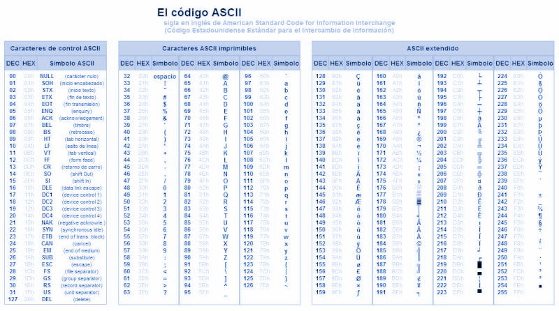
La tabla proporciona los equivalentes en hexadecimal y decimal. Para obtener el código binario de siete bits para cada carácter hay que convertir el valor hexadecimal en binario.